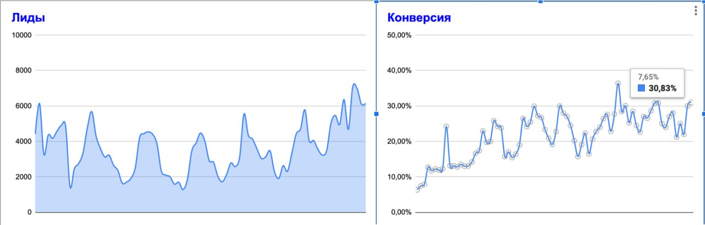

Наш кейс с «ТехноАгро» вышел на официальном сайте Битрикс24
Команда Битрикс24 опубликовала историю внедрения, которое «АйТи Аналитикс» провела для ООО «ТехноАгро» — мультибрендовой компании по продаже сельхозтехники. Рассказываем коротко, о чём кейс, и даём ссылку на полную версию.
Из хаоса — в систему продаж
«ТехноАгро» продаёт сельхозтехнику всех видов и размеров. В штате более 80 человек, каждый день — сотни звонков и заказов. Когда компания начала быстро расти, процессы за ростом не поспевали: клиенты хранились в десятках гугл-таблиц, продажи — в 1С, маркетинг и сервис работали в отрыве от остальных. Не хватало сквозной аналитики — откуда приходят клиенты, как они конвертируются и где теряются звонки.
Из нескольких интеграторов «ТехноАгро» выбрала «АйТи Аналитикс». Начинали непросто: хотелось «всё, сразу и быстро», и попытка охватить всё разом превратилась в квест, а команда сопротивлялась. Дальше пошла планомерная поэтапная работа — от простого к сложному, с регулярными встречами и обучением сотрудников через видеоинструкции и гайды.
«Внедрение — это не история про "поставить систему". Это долгая совместная работа, в которой обе стороны — как одна команда. Только тогда можно прийти к результату». Вадим Болдовский, заместитель директора по финансам и развитию «ТехноАгро»

Что дало внедрение
 Конверсия из лида в продажу выросла с 9% до 30% — продажи втрое при умеренном росте заявок
Конверсия из лида в продажу выросла с 9% до 30% — продажи втрое при умеренном росте заявок- Доля рекламных расходов от маржи снизилась с 30% до 9% за два года
- UTM по 50+ каналам, SIP-телефония с отдельными номерами и связка с 1С — виден источник, расход и прибыль по каждой сделке
- CRM ежедневно пользуется 75% сотрудников, задействованы почти все модули Битрикс24

Подробный разбор — с этапами внедрения, скриншотами воронок, аналитики и отчётов из 1С — читайте в нашей версии кейса или в оригинале на сайте Битрикс24 ↗.
Обсудить внедрение Битрикс24
Проведём бизнес-анализ, выстроим воронки под ваши процессы, подключим телефонию и 1С и настроим сквозную аналитику.